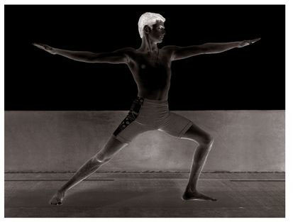
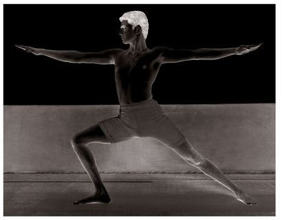
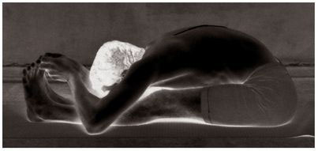
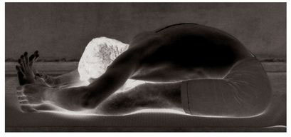
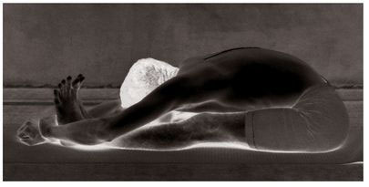

There are sixteen vinyasas to this asana. The 9th is its state (see figures).
METHOD
To begin, follow the first Surya Namaskara through the 6th vinyasa. Then, doing puraka and with only the strength of the arms, jump the legs between the hands without allowing them to touch the floor, and stretch out the legs. Then press the hands to the floor on either side of the hips, straighten the chest and waist, lower the head a little, draw the anus up tightly, lift the lower abdomen and hold firmly, and sit erect, slowly doing rechaka and puraka as much as possible; this constitutes the 7th vinyasa. Next, doing rechaka, grasp and hold the upper parts of the feet; this is the 8th vinyasa (as your practice becomes firm, you should be able to lock your hands behind your feet). Then, doing puraka slowly, then rechaka, straighten both legs, and place the head between the knees; this is the 9th vinyasa and the state of the asana. While in the state, do puraka and rechaka slowly and deeply, as much as possible. Then, slowly doing puraka, lift only the head; this is the 10th vinyasa. Next, doing rechaka and then puraka, let go of the feet, press the hands to the floor, bend the legs, and lift the entire body up off the floor merely with the strength of the arms; this is the 11th vinyasa. The remaining vinyasas are the same as those for the Surya Namaskara.
There are three types of Paschimattanasana: 1) holding the big toes and touching the nose to the knees; 2) holding on to either side of the feet and touching the nose to the knees; and 3) locking the hand and wrist beyond the feet, and touching the chin to the knee. All three types should be practiced, as each is useful.
BENEFITS
The practice of this asana helps the stomach to become slender by dissolving its fat. It also increases jathara agni [the fire of hunger], helps food to digest well, and strengthens the organs of the digestive systems ( jir-nanga kosha). In addition, it cures weakness in the hands and legs resulting from a loss of appetite and low digestive fire, as well as indolence and giddiness stemming from an aberration in the liver, and gas problems in the stomach.
VIRABHADRASANA, 9TH VINYASA

VIRABHADRASANA, 10TH VINYASA

PASCHIMATTANASANA (1st type)

PASCHIMATTANASANA (2nd type)

PASCHIMATTANASANA (3rd type)

It is worth noting that, for this asana, one has to retract, or squeeze, and hold the anus tightly, as well as squeeze the lower abdomen and hold it in, and concentrate on the nadis related to the kanda, or egg-shaped nerve plexus in the anal region. As there is no place for the apana vayu [downward-flowing prana, or energy], which circulates in the anus, to go, it moves upward and becomes one with prana vayu [upward-moving prana]. When this occurs, an aspirant has nothing to fear from old age and death, as Svatmarama Yogendra, the author of Gheranda Samhita, and the sage Vamana both inform us from their own experience:
Iti Paschimattanam asanagyam Pavanam
paschimavahinam karoti
Udayam jatharanalasya kuryadudare
karshyamarogatam cha pumsam.
[Principle among asanas, Paschimattanasana causes vital energy to
be carried up the spine. As well, it should lead to the rising of
the digestive fire, slenderness in the abdomen, and freedom
from sickness for all.]
—Hatha Yoga Pradipika i : 29